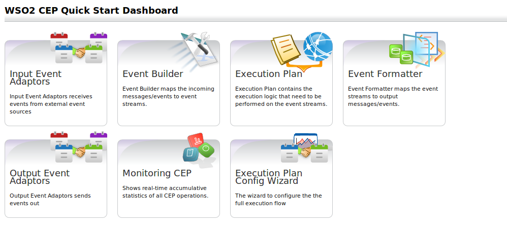

WSO2 Complex Event Processor (CEP) is a lightweight, easy-to-use, open source Complex Event Processing Server (CEP) available under Apache Software License v2.0. WSO2 CEP identifies the most meaningful events within the event cloud, analyzes their impact, and acts on them in real-time. It's built to be extremely high performing and massively scalable. WSO2 CEP is built up on the award-winning, WSO2 Carbon platform, which is based on the OSGi framework enabling better modularity for your service oriented architecture (SOA). WSO2 Carbon framework contains many enhanced features and optional components to customize the behavior of the server through simple, point-and-click provisioning. CEP features can be installed in other WSO2 products built on top of the same WSO2 Carbon platform. In other words, CEP is lean and lightweight with just the right set of features needed for efficient functioning, but can also be easily customized and enhanced to according to constantly changing business needs. In other words, WSO2 CEP is future-proof. CEP can also be tightly integrated with WSO2 Business Activity Monitor, by adding support for recording and post processing events with Map-Reduce via Apache Hadoop. The WSO2 CEP is an on-going project. It undergoes continuous improvements and enhancements with each new release, to address new business challenges and customer expectations. WSO2 invites users, developers and enthusiasts to get involved or get the assistance from our development teams at many different levels through online forums, mailing lists and support options. We are committed to ensure you a fulfilling user experience at any level of involvement with WSO2 CEP.
Figure1: Complex Event Processor Home Page